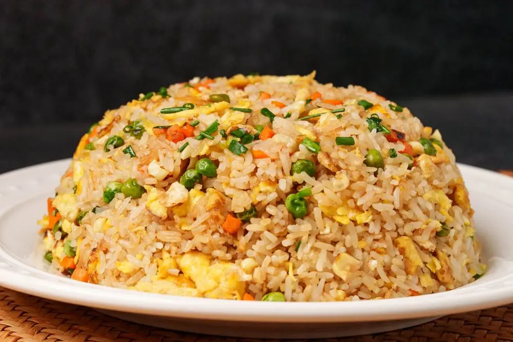

Fried Rice

Your Delicious Fried Rice
Hello Fams!
Welcome to this amazing picnic day
Today, I hereby introduce a sweet and amazing fried rice
So, chill and enjoy your meal. Thanks for your patronage!
Ingredients For Our Delicious Fried Rice
- Rice (preferably long-grain parboiled rice)
- Chicken (or beef, shrimp, or liver)
- Vegetable oil
- Carrots(diced)
- Greeen peas
- Sweet corns
- Green beans
- Green bell pepper
- Red bell pepper
- Onion
- Garlic(powder)
- Curry Powder
- Thyme
- Salt
- Black pepper
- Seasoning cubes or powdered form
- Water
Steps To Cook Our Delicious Fried Rice
- Wash the rice and cook it in water until it is tender but still firm, then drain and allow it to cool
- Season and cook the chicken, then cut it into small pieces and set it aside
- Heat the vegetable oil in a large pan and saute the onion, powdered garlic,
carrots, green beans, green peas, sweet corn, and bell pepper for a few minutes
- Add the curry powder, thyme, salt, black pepper, and seasoning cubes then stir well so the vegetables are evenly coated with the seasonings
- Add the cooked rice and chicken to the pan, then stir thoroughly until the ingredient are well combined and heated through
- Taste and adjust the seasoning if neccessarry, then serve the fried rice hot
Index Page
Bake Page
Chicken Page